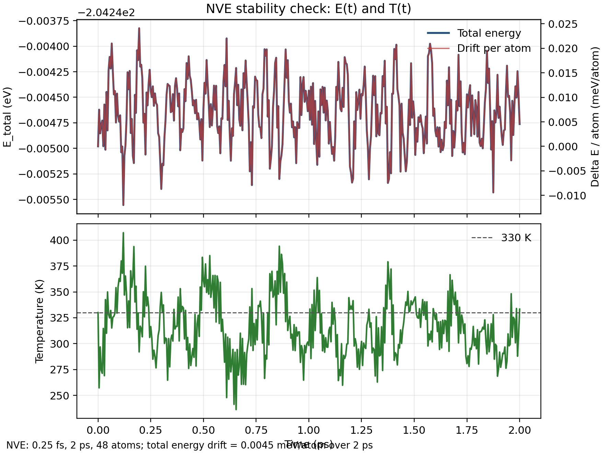

Machine Learning Potentials
Allegro MLPES 实战：从 VASP 数据集到训练、部署与动力学验证
这篇笔记记录一次完整的 Allegro 势能面排查与重建流程。目标不是只跑通一个训练命令，而是把从 VASP 数据、NequIP/Allegro 训练、模型导出，到 ASE/LAMMPS 动力学接口的关键环节串起来，并解释之前训练势能面容易崩溃的主要原因。
1. Allegro 是什么
Allegro 是一种 E(3)-等变的机器学习原子间势模型，核心思想是用局域、等变的表示学习原子环境到能量和力的映射。当前官方实现作为 NequIP framework 的扩展包发布，包名为 nequip-allegro。相比传统非等变描述符，Allegro 的优势在于它天然尊重三维旋转、平移和反演相关的对称性；相比全局 message-passing 模型，Allegro 的严格局域形式更适合大体系和并行分子动力学。
官方仓库和文档中需要特别注意版本：NequIP 在 2025-04-23 之后进入新的 0.7+ 配置体系，Allegro 对应 0.4+ 之后的写法也随之变化。本文使用的环境为 PyTorch 2.7.1、NequIP 0.11.1、Allegro 0.6.3。
2. 安装与环境
Allegro 依赖 NequIP。最小安装方式是先准备 PyTorch 环境，然后安装 PyPI 包 nequip-allegro。实际 HPC 环境中最好固定 Python、PyTorch、CUDA 和 NequIP/Allegro 版本，避免训练与部署阶段 ABI 或配置写法不一致。
conda create -n allegro python=3.10
conda activate allegro
# 按本机 CUDA/PyTorch 版本安装 torch，下面只是示意
pip install torch
# Allegro 在 PyPI 上的包名
pip install nequip-allegro
# 检查命令是否可用
which nequip-train
which nequip-compile
which nequip-package本次 4090 服务器上实际使用的环境路径为：
/data/home/lhgao/.conda/envs/allergo可用命令包括：
nequip-train: 训练和测试 NequIP/Allegro 模型。nequip-package: 把 checkpoint 打成.nequip.zip包。nequip-compile: 编译成 ASE 或 LAMMPS 可加载的.nequip.pth或.nequip.pt2。ase: 用 ASE 读写结构和跑动力学。
3. 与 LAMMPS 的接口
Allegro 与 LAMMPS 的官方接口是 pair_nequip_allegro。这个仓库提供两个 pair styles：pair_nequip 面向 NequIP message-passing 模型，pair_allegro 面向 Allegro 严格局域模型，并支持 MPI/Kokkos 并行。
模型需要先编译再给 LAMMPS 使用。TorchScript 路线：
nequip-compile \
best_epoch_0999.ckpt \
formal_nve970_lammps.nequip.pth \
--device cuda \
--mode torchscriptAOTInductor 路线用于 LAMMPS 时要指定 --target pair_allegro：
nequip-compile \
best_epoch_0999.ckpt \
formal_nve970_lammps.nequip.pt2 \
--device cuda \
--mode aotinductor \
--target pair_allegro典型 LAMMPS 输入片段如下。pair_coeff 后面的元素顺序必须与 LAMMPS data 文件中的 atom type 顺序一一对应，而不是随便写训练集里的元素顺序。
units metal
atom_style atomic
read_data mapbi3.data
pair_style allegro
pair_coeff * * formal_nve970_lammps.nequip.pth H Pb C I N
timestep 0.00025
thermo 100
run 10000
官方 FAQ 也特别提醒：如果 LAMMPS 动力学一开始就不稳定，首先检查 pair_coeff 里的 LAMMPS atom type 到模型 type name 的映射，以及训练数据和 LAMMPS 运行时的单位是否一致。这一点和本文后面定位到的旧失败原因完全吻合。
4. 数据集生成：NVT -> NVE -> 隔帧采样
本项目的体系是含 H/Pb/C/I/N 的 MAPbI3 相关体系，单帧 48 个原子。原始设想是先跑 330 K NVT，从 NVT 轨迹中抽取若干构型作为 NVE 分支初态，再从每条 NVE 轨迹中隔帧取样，最后用这些 DFT 标注的能量和力训练 Allegro。
旧流程的关键坑有三个：
INCAR里把ENCUT=600写成了ENCAT=600，VASP 不识别，旧data_set标签实际按 400 eV 跑。- 旧
POSCAR_step*没有 velocity block，NVE 分支实际从接近 0 K 开始，和目标 330 K 动力学分布不一致。 - 旧 Allegro 配置里 ZBL 使用
units: real，但 VASP 训练数据是 eV 和 eV/Angstrom，应使用metal或先关闭 ZBL。
修正后的数据策略：
- 确认 root NVT 的
OUTCAR使用ENCUT = 600 eV。 - 选 NVT 的第 3000、3500、4000、4500、5000 步构型作为 5 条 NVE 分支初态。
- NVE 分支使用
SMASS=-3，NSW=3000，POTIM=1.0，TEBEG=TEEND=330。由于旧 POSCAR 不含真实速度，这一步用 330 K 初始化速度，避免旧流程中的近 0 K 初态。 - 每条 NVE 丢弃前 100 步，再每 15 步采样一帧。
- 汇总为 ASE 可读的
extxyz文件。
最终数据集：
nve5_encut600_stride15_discard100.extxyz
frames: 970
natoms: 48
species: H, Pb, C, I, N
ENCUT metadata: 600 eV
sampling: NVT -> 5 NVE branches -> discard 100 -> stride 15后处理的核心命令如下：
python3 scripts/collect_nve_samples.py \
--job-root nve5_encut600_330K_20260526 \
--output nve5_encut600_stride15_discard100.extxyz \
--discard 100 \
--stride 15
python3 scripts/audit_extxyz.py \
nve5_encut600_stride15_discard100.extxyz \
--json-out nve5_encut600_stride15_discard100.report.json
sha256sum \
nve5_encut600_stride15_discard100.extxyz \
nve5_encut600_stride15_discard100.report.json \
nve5_encut600_stride15_discard100.collect_report.json \
> nve5_encut600_stride15_discard100.MANIFEST.sha2565. Allegro 训练数据格式
在 NequIP/Allegro 0.11/0.6 体系下，训练数据可以直接使用 ASE 可读格式。这里使用 extxyz，每帧包含晶胞、PBC、元素、坐标、能量、力和 stress。训练配置里通过 ASEDataModule 读取：
data:
_target_: nequip.data.datamodule.ASEDataModule
split_dataset:
file_path: /data/home/lhgao/allegro-main/test/MAPBI3/nve5_encut600_stride15_discard100.extxyz
train: 0.8
val: 0.1
test: 0.1
注意这里所谓“打包成 Allegro 格式”有两个层次：训练前的数据格式是 extxyz；训练后的模型归档格式是 .nequip.zip，部署/推理格式是由 nequip-compile 生成的 .nequip.pth 或 .nequip.pt2。
6. 正式训练参数文件
先用 200 帧小数据和 64 hidden features 做 smoke test，确认数据可读且不会 NaN。正式训练使用 970 帧 NVE 数据，128 scalar features、64 tensor features，关闭 ZBL，保存 best checkpoint。完整 YAML 如下。
run: [train, test]
cutoff_radius: 6.0
chemical_symbols: [H, Pb, C, I, N]
model_type_names: ${chemical_symbols}
data:
_target_: nequip.data.datamodule.ASEDataModule
split_dataset:
file_path: /data/home/lhgao/allegro-main/test/MAPBI3/nve5_encut600_stride15_discard100.extxyz
train: 0.8
val: 0.1
test: 0.1
transforms:
- _target_: nequip.data.transforms.NeighborListTransform
r_max: ${cutoff_radius}
- _target_: nequip.data.transforms.ChemicalSpeciesToAtomTypeMapper
chemical_symbols: ${chemical_symbols}
seed: 123
train_dataloader:
_target_: torch.utils.data.DataLoader
batch_size: 4
num_workers: 4
val_dataloader:
_target_: torch.utils.data.DataLoader
batch_size: 4
num_workers: 4
test_dataloader: ${data.val_dataloader}
stats_manager:
_target_: nequip.data.CommonDataStatisticsManager
type_names: ${model_type_names}
trainer:
_target_: lightning.Trainer
max_epochs: 1000
check_val_every_n_epoch: 1
log_every_n_steps: 20
devices: 1
num_nodes: 1
logger:
_target_: lightning.pytorch.loggers.TensorBoardLogger
version: formal_nve970_20260527
save_dir: outputs/tensorboard_logs
callbacks:
- _target_: lightning.pytorch.callbacks.LearningRateMonitor
logging_interval: epoch
- _target_: lightning.pytorch.callbacks.ModelCheckpoint
monitor: val0_epoch/weighted_sum
mode: min
save_top_k: 5
save_last: true
auto_insert_metric_name: false
filename: best_epoch_{epoch:04d}
- _target_: lightning.pytorch.callbacks.EarlyStopping
monitor: val0_epoch/weighted_sum
mode: min
patience: 120
min_delta: 0.00002
num_scalar_features: 128
training_module:
_target_: nequip.train.EMALightningModule
loss:
_target_: nequip.train.EnergyForceLoss
per_atom_energy: true
coeffs:
total_energy: 1.0
forces: 1.0
val_metrics:
_target_: nequip.train.EnergyForceMetrics
coeffs:
per_atom_energy_mae: 1.0
forces_mae: 1.0
test_metrics: ${training_module.val_metrics}
optimizer:
_target_: torch.optim.Adam
lr: 0.0005
lr_scheduler:
scheduler:
_target_: torch.optim.lr_scheduler.CosineAnnealingLR
T_max: ${trainer.max_epochs}
eta_min: 1e-5
interval: epoch
frequency: 1
strict: true
model:
_target_: allegro.model.AllegroModel
compile_mode: compile
seed: 456
model_dtype: float32
type_names: ${model_type_names}
r_max: ${cutoff_radius}
radial_chemical_embed:
_target_: allegro.nn.TwoBodyBesselScalarEmbed
num_bessels: 8
bessel_trainable: false
polynomial_cutoff_p: 6
radial_chemical_embed_dim: ${num_scalar_features}
scalar_embed_mlp_hidden_layers_depth: 3
scalar_embed_mlp_hidden_layers_width: ${num_scalar_features}
scalar_embed_mlp_nonlinearity: silu
l_max: 2
num_layers: 2
num_scalar_features: ${num_scalar_features}
num_tensor_features: 64
allegro_mlp_hidden_layers_depth: 3
allegro_mlp_hidden_layers_width: ${num_scalar_features}
allegro_mlp_nonlinearity: silu
parity: true
tp_path_channel_coupling: true
readout_mlp_hidden_layers_depth: 1
readout_mlp_hidden_layers_width: ${num_scalar_features}
readout_mlp_nonlinearity: silu
avg_num_neighbors: ${training_data_stats:num_neighbors_mean}
per_type_energy_shifts: ${training_data_stats:per_atom_energy_mean}
per_type_energy_scales: ${training_data_stats:forces_rms}
per_type_energy_scales_trainable: false
per_type_energy_shifts_trainable: false
global_options:
allow_tf32: falseSlurm 脚本的关键部分：
#!/bin/bash
#SBATCH -p 8-4090
#SBATCH -N 1
#SBATCH --ntasks-per-node 1
#SBATCH --cpus-per-task 8
#SBATCH --gres=gpu:1
#SBATCH -t 48:00:00
#SBATCH -J allegro_formal_md
export PYTHONUNBUFFERED=1
export OMP_NUM_THREADS=${SLURM_CPUS_PER_TASK}
srun /data/home/lhgao/.conda/envs/allergo/bin/nequip-train -cn formal_nve970.yaml7. 训练后打包与 ASE/MLPES 验证
训练完成后，使用 best checkpoint，而不是盲目使用最后一个 checkpoint。本次 best checkpoint 是：
outputs/tensorboard_logs/lightning_logs/formal_nve970_20260527/checkpoints/best_epoch_0999.ckpt打包模型：
nequip-package build \
best_epoch_0999.ckpt \
formal_nve970.nequip.zip编译成 ASE 可加载模型：
nequip-compile \
best_epoch_0999.ckpt \
formal_nve970_ase_cuda.nequip.pth \
--device cuda \
--mode torchscript \
--target ase \
--data-path nve5_encut600_stride15_discard100.extxyz \
--num-frames static \
--num-nodes staticASE 侧加载模型：
from ase.io import read
from nequip.ase import NequIPCalculator
atoms = read("nve5_encut600_stride15_discard100.extxyz", index=-1)
atoms.calc = NequIPCalculator.from_compiled_model(
"formal_nve970_ase_cuda.nequip.pth",
device="cuda",
chemical_symbols=["H", "Pb", "C", "I", "N"],
)
energy = atoms.get_potential_energy()
forces = atoms.get_forces()8. 验证结果
正式训练跑满 1000 epoch，Slurm job 状态为 COMPLETED 0:0。测试集指标：
test0_epoch/forces_mae = 0.0188637 eV/Angstromtest0_epoch/per_atom_energy_mae = 0.000543379 eV/atomtest0_epoch/total_energy_mae = 0.0260822 eVtest0_epoch/weighted_sum = 0.00970355
动力学上做了四个 smoke/diagnostic 测试：
- NVT, 1.0 fs, 5 ps: 不崩，但温度偏热，平均约 498 K。
- NVT, 0.5 fs, 5 ps: 不崩，温度仍偏热，平均约 492 K。
- NVT, 0.5 fs, Langevin friction 0.10 fs^-1, 5 ps: 不崩，末温约 385 K，但平均温度仍偏高。
- NVE, 0.25 fs, 2 ps: 总能量守恒很好，温度回到 330 K 附近，是判断 PES 积分稳定性的主要证据。

9. 失败原因复盘
这次排查说明，之前 Allegro 势能面经常崩溃，主要不是 Allegro 方法本身失败，而是工程链条中几个小错误叠加后放大到了 MD 里：
- 标签不一致：
ENCAT=600拼写错误导致旧数据实际是 400 eV 标签，却被当作 600 eV 数据使用。 - 采样分布不对：旧 NVE 初态没有继承 NVT 速度，NVE 从接近 0 K 开始，和目标 330 K 动力学分布不一致。
- ZBL 单位错误：旧配置使用
pair_potential.units: real，而 VASP 数据和 LAMMPSmetal单位都是 eV/Angstrom 体系。 - 使用 last checkpoint 的风险：长训练中最后一个 checkpoint 未必是验证集最优，部署时应该优先用 best checkpoint。
10. 可复用检查清单
- 每个 VASP 分支检查
OUTCAR中真实ENCUT，不要只看模板 INCAR。 - 训练前审计
extxyz：帧数、原子数、元素统计、能量/力有限性、最小原子间距、metadata。 - 先用小模型 smoke test，再上正式模型。
- 初次训练先关闭 ZBL；若需要 ZBL，确认单位使用
metal。 - 部署时用 best checkpoint，并记录 test metrics。
- 动力学验证优先做 NVE 能量守恒，再调 NVT thermostat。
- LAMMPS 中检查
pair_coeff的 atom type 到 model type name 映射。